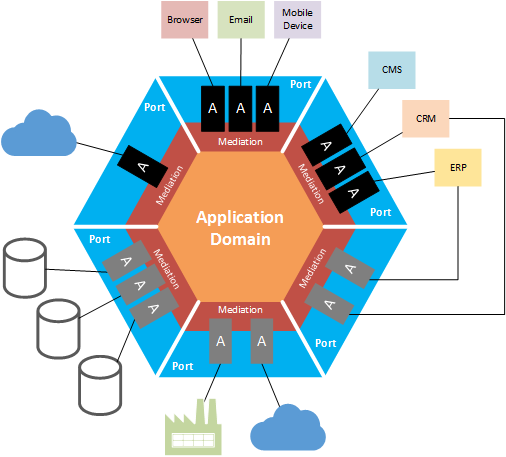

DMI Java and Spring Bootcamp
Introduction to Spring
Jeff Butler
github.com/allegient-labs/bootcamp-java
A Little History
- From Applets to Servlets
- Abysmal EJBs
- Framework Wars
- Spring Dominates
Java Servlets
@WebServlet("/HelloWorld")
public class HelloWorldServlet extends HttpServlet {
@Override
protected void doGet(HttpServletRequest request, HttpServletResponse response)
throws ServletException, IOException {
response.setContentType("application/html");
PrintWriter out = response.getWriter();
out.println("<html>");
out.println("<body>");
out.println("<h1>Hello World!</h1>");
out.println("</body>");
out.println("</html>");
}
}
No one wants to do this anymore
Java Enterprise Edition
- a.k.a. J2EE, Java EE
- Fully defined with interfaces
- Many vendors offer implementations
- The Java EE Specification covers a large variety of concerns:
- Web API
- Database Persistence
- Distributed Transaction Management
- etc.
- Transitioning from Oracle to the Eclipse Foundation as Jakarta EE
Packaging and Deployment
- The Old Way
- Monolithic Applications
- Build a WAR/EAR
- Build Infrastructure
- Deploy your EAR/WAR
- The New Way
- Microservices
- Servlet container packaged in the application
- The goal is to lessen our dependence on external infrastructure
Clean Architecture
- a.k.a. Hexagonal Architecture, Onion Architecture, Ports and Adapters
- Originally described by Alistair Cockburn
- Key Ideas
- The core functionality of your system should be implemented with POJOs
- User Interfaces and Persistence are external concerns
Hexagonal Architecture

Image credit: http://pradeeploganathan.com/architecture/hexagonal-architecture/
Spring Basics
- The heart of Spring - Dependency Injection, a.k.a. Inversion of Control (IoC)
- The Spring container runs inside your application's memory space
- The Spring container manages the lifecycle and dependencies of your classes
- Spring provides abstractions for virtually every concern of the modern web developer
THe Magic Annotations
- @Configuration - tells Spring to look in this class for bean providers
- @Bean - tells Spring to call a method to create instances
- @Autowired - tells Spring to inject
Spring REST
- Simplifies REST Controllers
- The key annotations
- @RestController - defines a class as a controller (will accept HTTP requests and produce JSON reponses)
- @GetMapping - one of many different mappings for the different HTTP methods. Defines a route to the method.
- @RequestParam - gives a name to a method parameter
A Typical Configuration
@Configuration
public class Config {
@Bean
public AtomicInteger counter() {
return new AtomicInteger();
}
}
A Typical REST Controller
@RestController
public class HelloController {
@Autowired
private AtomicInteger myCounter;
@GetMapping("/hello")
public ResponseEntity<String> hello(@RequestParam("name") String name) {
String answer = "Hello " + name + "! I have been called "
+ myCounter.incrementAndGet() + " times.";
return ResponseEntity.ok(answer);
}
}
Spring and Hexagonal Architecture
- Spring is very good at injecting ports and adapters with dependency injection
- Spring can do different injections based on environment settings
- For example, it can set your application up one way if it is deployed to the cloud, but a different way for local
testing.
- Defining services as interfaces, then providing different implementations per environment is the key
Spring Boot Overview
- Designed for microservices architectures
- Builds an application with an embedded servlet container
- Easily deployed via Docker or PaaS
- Great Support for Testing
- A curated set of dependencies – lessens JAR Hell
- Auto configuration...if a dependency is in the class path it will be used
Starting with Spring Boot
- Start at https://start.spring.io
- Maven or Gradle
- Java, Kotlin, or Groovy
- Pick your initial set of dependencies
- This will create a project and environment for your application – you only need to add your code, not worry too
much about infrastructure or plumbing
Swagger
- Swagger is used to document and provide a testing interfaces for REST endpoints
- Enabled with one annotation - @EnableSwagger2
- Can be customized to provide detailed documentation for REST endpoints, but the defaults are pretty good